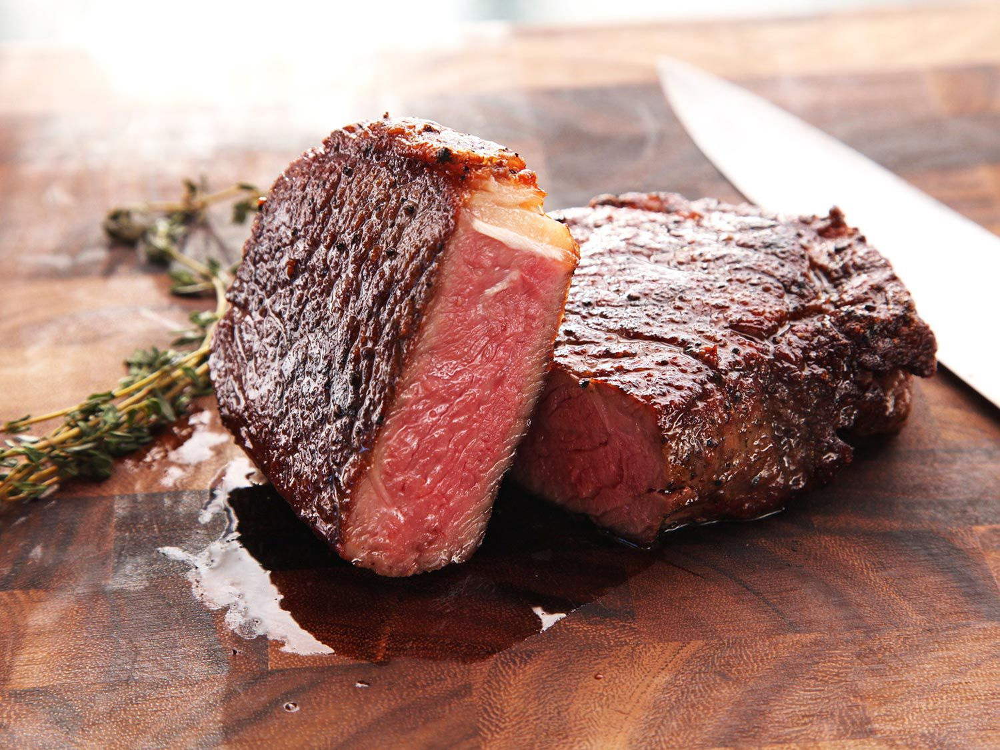

Medium Well Steak

Description
A well marbled steak cooked to perfection.
Ingredients
- 2 lb Steak
- 3 tbsp oil
- 1 packet adobo seasoning
- 1 tsp salt
- 1 lime
Steps
- Marinate in Lime, adobo and salt for 12 hours.
- Grill on skillet on med/high heat for 5 to 6 mins.
- Flip and grill for an additional minute.
- Let sit for 5 mins.